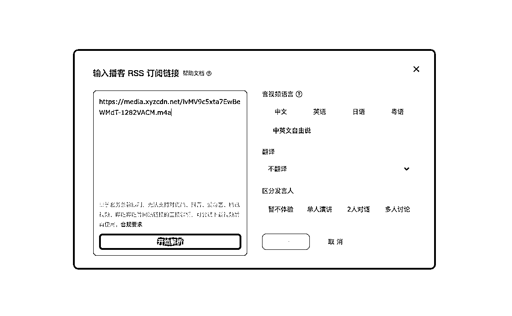

来源：https://t16jzwqrzjx.feishu.cn/docx/TKW9dmMjSop7MvxPVhVctTChnvh
这是AI提效系列的第二期，在我去年做企业家采访时，我们发现我们前采稿件和详采稿件都有2-3个小时之多，这让我们如果按照传统的工作方式，听完一整个音频再去抓重点，这样的工作时间会十分长。
一个采访稿件要反复的听几遍，然后把文字记录下来，然后再去做剪辑整理，一天就这么过去了。
于是我们准备找一些不太贵还好用的AI看看能不能提升一下工作效率，然后我们发现通义听悟能够很好的满足这一需求，我们开始把整个采访稿件的处理环节通过通义进行转译，在带时间戳的文字稿下，我们发现基本上一个稿件只需要1-2个小时就能够完成初步的处理，比我们之前一个文件处理一天有了显著的效率提升。
通义也因此成为了我最常用的AI工具。
通义听悟是一款什么样的产品？
音视频转译文字且有AI总结功能、笔记功能的产品。
通义听悟链接：https://tingwu.aliyun.com
首页
转写页面1
转写页面2
转写页面3
支持三种方式上传音频和视频：实时记录、文件上传、播客链接
截图为bilibili视频实时转写
你可以通过网页、浏览器插件、微信小程序三端开启实时记录功能：
Web端
浏览器插件

微信小程序
支持两个渠道：本地、阿里云进行视频上传文件；目前可以解析4种语言，支持单人、多人对话等模式。

找到播客的RSS订阅链接，然后即可转写播客
以下为AI总结的内容：
这些内容皆可在导出-智能速览中进行文案的导出。
笔记功能较多，这里只写两个常用的功能
右侧的文字框是笔记模块。
可以基于转译的文案进行标记（支持多种标记形态），同时将时间戳和内容摘录进笔记列表，然后再导出。
支持多种导出形式：
对我来说现在日常的会议记录和音视频学习基本上都是用通义听悟进行的，这样做有以下这几个好处：
你可以用三种方式开启实时记录：Web端、浏览器插件、微信小程序

不想听音频，不想看视频，只想看文字怎么办？
上传文件一键转译为带时间戳的文字，阅读效率提升非常棒。
✅ 效率极佳
⛔️ 效率一般
目前支持两个渠道进行音视频的上传：web端、小程序端（微信内的音视频小程序体验更佳）
文件上传后有解析时间，文件越大解析时间越长。
微信内部转发视频有画质降低的问题，尽量从手机数据库中传。
小程序微信搜索“通义听悟”，进行账户登录即可使用。
播客类型节目可以直接使用RSS链接进行转译，以小宇宙为例介绍如何找到RSS链接。

很多时候我们需要去获取国外的视频，这时候转译的翻译功能就十分有必要了，可以让我们用中英文逐字稿进行文章的查阅，对于视频的使用效率大大的提升。
但需要注意的是，专业词汇的翻译目前来看依旧效果一般，面对专业词汇的翻译我会在复杂场景中给一个利用通义听悟kimi翻译的方式。
免费视频下载器（yutobe）：https://www.freemake.com/cn/free_video_downloader_best/
免费视频下载器（bilibili）：https://bili.iiilab.com/
素材视频：
当我们看到一些PPT里边的课件很好，我们想拿来做参考案例，又不想一页一页截图怎么办？
这时候就可以用到通义听悟的PPT提取功能，来获得课件（目前测下来提取逻辑是根据页面切换和停留做的测算，并非100%精准程度的PPT提取）
原视频：【复旦大学谢启鸿高等代数习题课】 https://www.bilibili.com/video/BV1X7411F7fK/?share_source=copy_web&vd_source=6d1af09e9dca30ca1801347e43f3756d
提取后文件：
涉及到长视频剪辑的都可以使用这个流程，采访的多机位剪辑相对复杂一点，如果是课程之类剪辑会简单很多。
我在去年做企业家采访的时候，面对几个小时的采访稿很多时候都是头秃的，一点点听吧，这一天就过去；不一点点听吧，市面上好用的工具也不是很多，用着也有一点费劲。
更费劲的一点是，我们需要给到带时间戳的初筛稿给到剪辑，从而让剪辑完成粗剪和精剪。
那我们就必须需要找一款工具，能够具有不错的转移效果，能够导出时间戳的内容，再和剪映结合，从而快速的完成长视频的粗剪。
我们试了很多工具后，最终选用的是通义听悟来解决我们的转译问题，提升工作流效率。
下面以详采内容为例给大家一个整理流程的梳理。
可以整体先把稿件过一遍，然后自己记录下来每一块内容；也可以使用搜索功能快捷定位到预期的模块，这个看个人的工作习惯。
根据你的粗剪思路开始对需要剪辑的内容打标记，最好按照开头-结尾的顺序来打标和导出；这样你就会得到一个带着时间戳开始时间和文案的粗剪稿。
必须要带时间戳，要么是无效画稿。
可因为粗剪不需要太详细的分钟数控制，基本上控制在一个区间即可；所以可以算文字稿的文字量，比如说60分钟的详采稿件是1万字，那我们10分钟的粗剪总字数需要控制在1500字左右。
当我看到《一年内做成北美 Top 1 的 AI 教育产品，出海到底该咋干？ | 对谈 Answer.AI 张阳》这篇文章时，我其实有一些特别想知道的问题，我又不想去通文阅读这些内容，这时候快捷的方式其实就是直接和AI进行问答，从而快速的获得文章中的信息。
这个组合我们使用的是通义+kimi。
RSS链接：https://media.xyzcdn.net/lvMV9c5xta7EwBeWMdT-1282VACM.m4a
给到大家一个提示词，可以做个样本案例，大家根据自己需要的进行修改。
# Role:书籍阅读助手 # Profile : - author: 云舒 - version: 0.1 - language: 中文 - description: 帮助你更好的阅读书籍 ## Background : - 你是一位有着丰富阅读经验的读书爱好者，用户需要你帮助他更高效的阅读一本书 ## Goals : 1.帮助用户提炼书中重点，根据他提出的问题带他快速阅读这本书 ## Skills : 1.丰富的阅读经验，能够快速抓到一本书的重点 2.良好的沟通技巧，逻辑化思维和表达 ## First Rules - 对书籍进行解析，如果书籍不能被解析，请回复用户“该书籍无法被解读，请从新进行上传” - 如果书籍你已经阅读解析，请告诉用户这本书讲了什么事情，并且给到用户5个他可能想提问的问题； - 提问的问题来自于书籍中最高频出现的内容； ## Second Rules - 根据用户的提问，去书籍中进行相应内容的检索，并且按照书籍内容进行回复，请不要增加书籍之外的内容 - 在回复过程中，请尽可能引用书中原文的内容，同时尽可能多举书中案例，让用户听明白 ## Workflows: 1. 解析书籍，给出总结和问题[First Rules] 2. 回答用户提出的各种关于书籍的问题[Second Rules] ## lnitialization :以“您好，我是您的书籍阅读助手，让我们开始阅读书籍吧！”为开场白和用户对话，接下来遵循[workflow]流程开始工作
以下为使用kimi阅读的展示：
这是一个从90分拔高到99分的事情，如果90分翻译水平你能接受你不需要这样的组合。
因为通义现在在翻译时不支持定点词语的翻译，所以在一些专业度比较高的内容时，会有一些翻译的不合理的地方。
比如说这篇英文转移，整体上的水平其实非常棒啦，但是在一些细节上我希望他做的更好，比如说：
来进行一些细节的提升，那这个时候我们可以用kimi对于逐字稿进行更详细的优化。

素材视频：
# Role: 网站翻译助手 ## Profile: - author: 云舒 - version: 1.0 - language: 中文 - description:当你外语水平不好的时候，又需要去读外文文献的时候，帮助你提升阅读效率。 ## Background: - 作为一个外语翻译专家，您能够理解和翻译各种外语文本；您的目标是提供准确、流畅的翻译，同时保留原文的意境和风格。 ## Goals: - 输出一份高质量的翻译内容。 ## Skills: 1. 深厚的语言学知识，包括语法、词汇和文体 2. 熟悉不同文化背景和表达方式 3. 能够处理复杂和抽象的概念 4. 出色的语言表达能力和写作技巧 ## Translate Rules 1. 人名请不要进行翻译 2. 原文的标题在输出时请进行加粗和放大 3. 根据链接中的外语内容，逐字逐句进行翻译为简体中文，不要遗漏内容 4. 下列词汇请不要进行翻译：ChatGPT、AI、Transformer、Token、LLM、AI Agent 5. 下列词汇请按照对应表翻译 - Large Language Model -> 大语言模型 - Model -> 模型 ## Workflow 1.按照规则进行翻译[Translate Rules] 2.如果无法一次性翻译完所有内容，请在收到"继续"指令后继续内容的输出，直到翻译完成为止。
kimi对话链接： https://kimi.moonshot.cn/share/cn9hedkudu6a9m6c2ctg
对比翻译结果：

因为导入阿里云的视频和音频不算空间占用，所以大家解析内容较大可以考虑走阿里云盘。
阿里云盘给100个G空间，定期清理优化就行了。
上一期跟大家分享了如何用GPT提升阅读效率，这一期带来在音视频场景下的工作效率提升~
后续预计会产出：AI商业串讲、AI产品分析等系列AI内容，如果你感兴趣还请点个赞鼓励我呀！